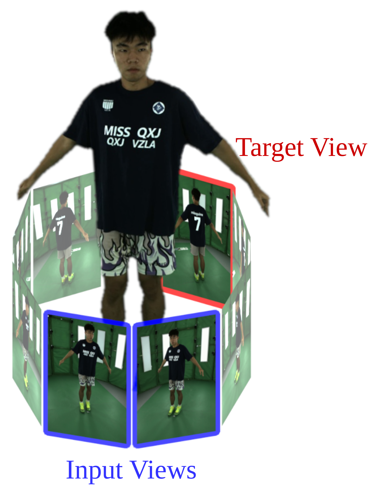
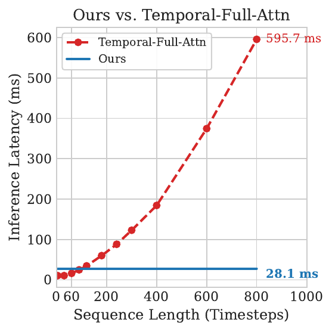

Architecture

NSTM Architecture: NSTM operates in two alternating modes. In Memorization Mode, the model attends over multi-view inputs and updates its fast-weight memory with a test-time gradient step (W → W'). In Novel View Synthesis Mode, the updated memory is frozen and applied — together with the current posed inputs and target rays — to render novel views in real time.

Training Regime: NSTM alternates between two training objectives. In the Memory Supervision step, isolated memory tokens query the fast-weights to reconstruct a target view entirely from internalized context. In the Synthesis Supervision step, input and target tokens freely cross-attend to capture current motion, querying the previously updated memory without altering it.

Camera Setup
Our multi-view camera rig captures synchronized video streams of dynamic scenes, providing the multi-view input observations at each timestep.

Runtime Scaling
Unlike temporal full-attention baselines that scale quadratically with context length, NSTM maintains constant inference latency regardless of video length, enabling real-time performance on minute-scale streams.